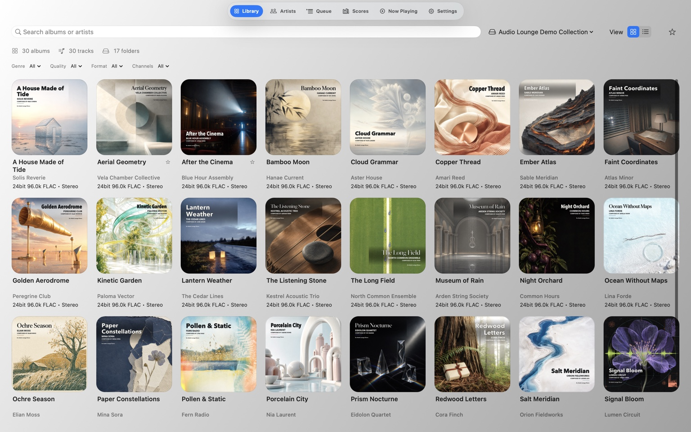
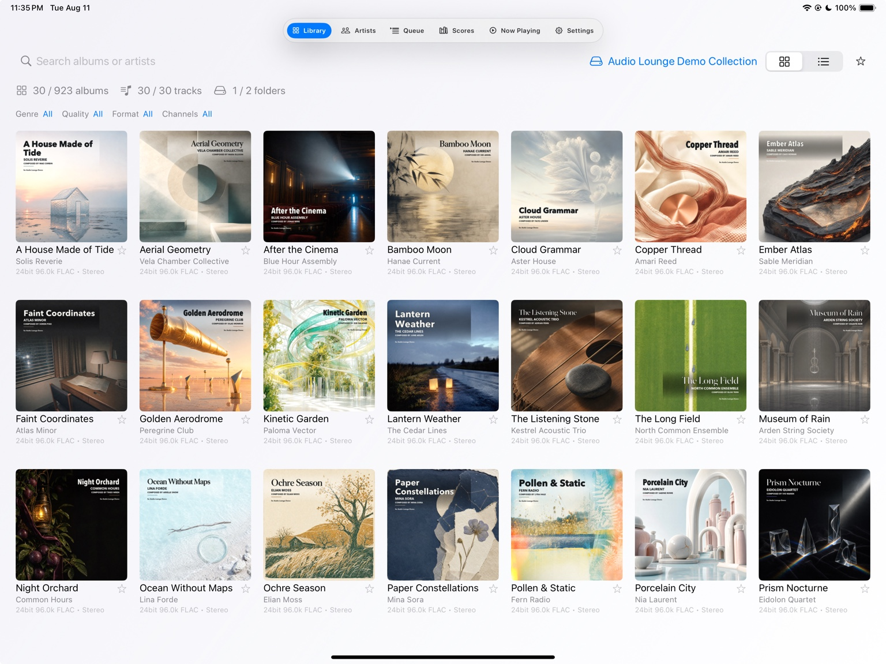
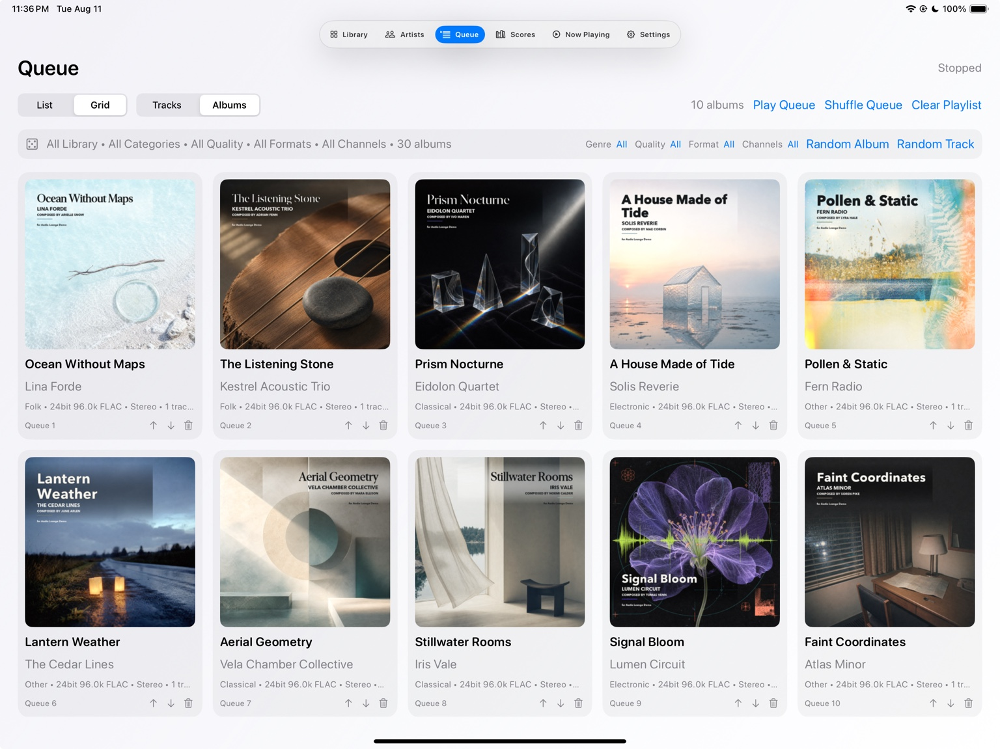

SMB Direct
Your music, right where you left it.
Connect directly to your NAS or SMB share. No Finder mounting, no Files app mounting, and no cloud copy of the library.
Set up SMB Direct →Audio Lounge 1.1.1 · Mac & iPad
Built for the music you own on Mac and iPad—with Memory Playback, SMB Direct, bit-perfect USB DAC output, Native DSD and DoP, plus HALO network audio up to DSD512.

What’s new in Audio Lounge 1.1.1
Version 1.1.1 adds direct NAS access and HALO network audio, with substantial improvements to Hi-Res playback, USB DAC handling, stability, and performance.
Connect directly to a NAS or SMB share. No Finder mount on Mac, no Files app mount on iPad, and no cloud copy of your library.
Our bit-perfect network audio protocol.
Native DSD up to DSD512.
A rewritten dual-buffer Memory Playback engine for stable Hi-Res, DSD, NAS, gapless, USB DAC and HALO listening.
Your music stays exactly where it is—on your Mac, external drives, or NAS. No cloud upload. No account required.
Designed to disappear
The new networking features are there to remove setup from the listening experience—not add another system to manage.
SMB Direct
Connect directly to your NAS or SMB share. No Finder mounting, no Files app mounting, and no cloud copy of the library.
Set up SMB Direct →HALO Network Audio
Preserve a bit-perfect network playback path, with Native DSD up to DSD512 for compatible DACs.
Explore HALO →New on iPad


Faithful Playback
A memory-buffered engine, bit-perfect playback on supported hardware, Native DSD and DoP for compatible USB DACs, automatic sample-rate matching, gapless playback, and optional PCM upsampling.
Learn how DSD playback works on Mac →Transparent Audio Path
See the source format, playback path, output device, and final sample rate in real time.

Technology should serve the listening experience—and quietly get out of the way.
NativeBits
DSD Disc Author for Mac
A focused new authoring workspace for turning DSD masters into finished disc projects.
Discover NativeBits →Start free
Audio Lounge 1.1.1 for Mac and Audio Lounge Air for iPad are available now. One-time purchase. No subscription.
Choose your platform